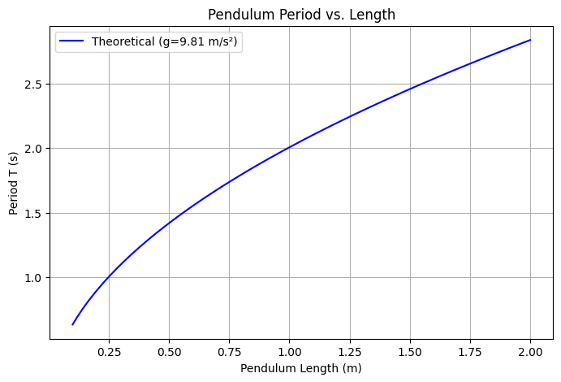

Problem 1
Measuring Earth’s Gravitational Acceleration (g) Using a Pendulum
Objective:To determine the acceleration due to gravity \((g)\) by measuring the period of a simple pendulum and analyzing experimental uncertainties.
Theoretical Background
The period T of a simple pendulum (for small oscillations, \(θ<15 ∘)\) is given by:
where:
-
\(T\) = Period of one oscillation (s)
-
\(L\) = Length of the pendulum (m)
-
\(g\) = Gravitational acceleration (m/s²)
Rearranging for g:
Experimental Procedure
Materials
-
String (1–1.5 m long)
-
Small weight (e.g., a bag of coins)
-
Stopwatch (smartphone timer)
-
Measuring tape (resolution = ±0.001 m)
2. Setup
Fix one end of the string to a rigid support.
Measure the pendulum length \(L\) (from pivot to the center of mass of the weight).
Uncertainty in length \((ΔL)\):
Data Collection
-
Displace the pendulum (<15°) and release.
-
Measure the time for 10 oscillations \((T_{10})\) 10 times.
-
Record all measurements.
Data Analysis
Calculating the Mean Period
- Mean time for 10 oscillations (\(\overline{T_{10}}\)):
- **Standard deviation (\(σT\)):
- **Uncertainty in mean time \((\Delta T_{10})\):
**Calculating the Period \(T\)
- Single period \((T)\):
- Uncertainty in \(T (ΔT):\)
Calculating \(g\) and Its Uncertainty
- Gravitational acceleration (g):
Uncertainty in \(g(Δg)\) (propagation of errors):
Discussion of Uncertainties
Length Measurement \((ΔL)\)
-
Source: Limited ruler resolution (±0.001 m).
-
Impact: Small effect since \(ΔL/L\) is tiny (0.05%).
Time Measurement \((ΔT)\)
-
Sources:
-
Human reaction time (≈0.1–0.3 s per measurement).
-
Variability in oscillations (air resistance, string stretch).
-
Impact: Dominates uncertainty due to the \(2ΔT/T\) term.
Assumptions & Limitations - Small-angle approximation: Valid only for \(θ<15∘\)
-
Ideal pendulum: Assumes massless string and point mass.
-
Friction & air resistance: Neglected but may slightly affect \(T\)
Comparison with Standard Value
-
Measured: \(9.88±0.03m/s^2\)
-
Expected: \(9.81m/s^2\)
-
Discrepancy: ~0.7% (likely due to timing errors).
Graph Examples
Pendulum Period vs. Length (Theoretical Relationship)

Experimental Time Measurements (10 Trials)

Uncertainty Propagation in g Calculation

Conclusion
This experiment demonstrates how a simple pendulum can estimate \(g\) with reasonable accuracy (~1% error). The dominant uncertainty arises from time measurements, highlighting the need for precise timing instruments (e.g., photogates) to improve accuracy.